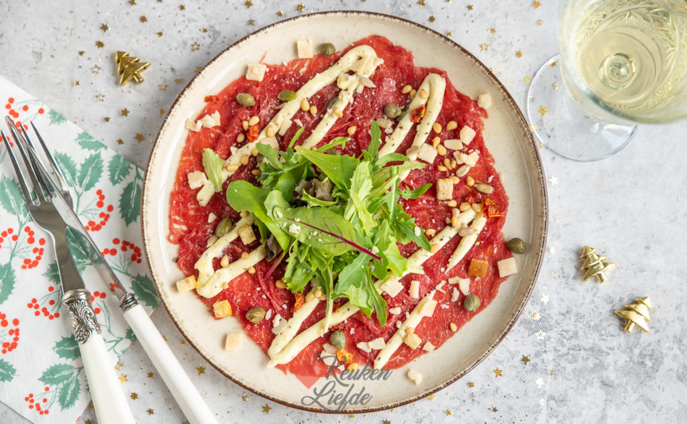

1. Zorg ervoor dat de ossenhaas dun is gesneden.
2. Leg de dunne plakjes ossenhaas op een groot plat bord, zodat ze elkaar niet overlappen. Zorg voor een gelijkmatige verdeling.
3. Verdeel een handvol verse rucola over de plakjes ossenhaas.
4. Schaaf dunne schilfers Parmezaanse kaas bovenop de ossenhaas en rucola.
5. Strooi een paar kappertjes over het gerecht.
6. Meng in een kommetje een eenvoudige dressing van olijfolie en vers geperst citroensap.
7. Breng de dressing op smaak met zout en peper.
8. Giet de dressing gelijkmatig over de carpaccio.
Tip Lekker met pijnboompitten. De nootachtige smaak van de pijnboompitten voegt een heerlijke textuur toe aan het gerecht.